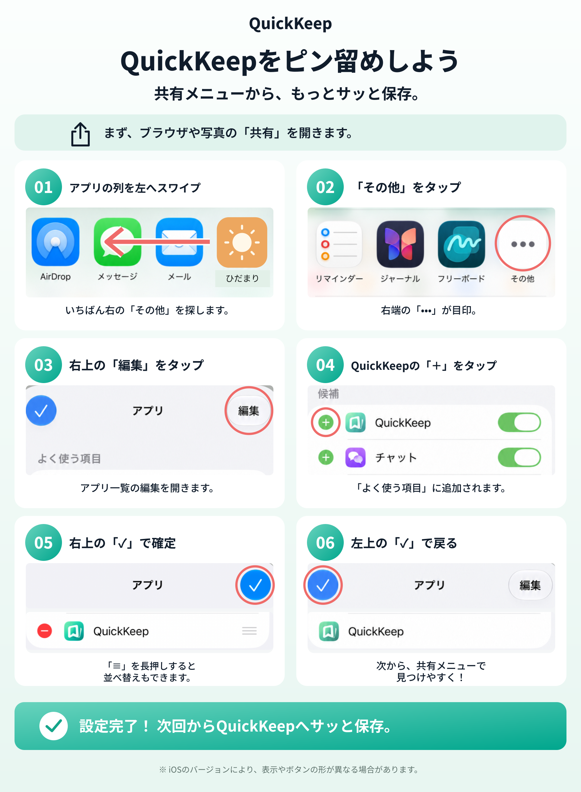

サポート・FAQ
よくある質問とサポート情報を案内します。
FAQ
QuickKeepが共有シートに表示されません。
共有シートで「その他」→「編集」を開き、QuickKeepをオンにしてください。よく使う項目へ追加すると、次回から選びやすくなります。

保存したものはどこに保存されますか？
通常は、このデバイス内に保存されます。iCloud同期をオンにすると、同じiCloudアカウントで使うほかのAppleデバイスでも確認できます。
iCloudの容量が不足すると、保存できなくなりますか？
iCloud同期とこのデバイスへの保存は別です。空き容量や端末の状態によって保存できない場合を除き、同期に問題があってもローカル保存を優先します。同期状態は設定で確認してください。
削除した保存物を戻せますか？
削除した保存物は「最近削除した項目」に30日間残ります。その間は復元できます。完全削除した保存物は復元できません。
AI機能は保存内容をクラウドへ送りますか？
対応端末のAI機能は端末内の処理を基本とします。保存内容をクラウドAIへ自動送信する仕組みは設けていません。
FreeとProの違いは何ですか？
Freeでは保存、基本管理、キーワード検索、手動コレクション、任意のiCloud同期を利用できます。Proでは、対応端末でのAI検索、スマートコレクション、高度な整理などの追加機能を利用できます。購入条件はApp Store上の表示を確認してください。